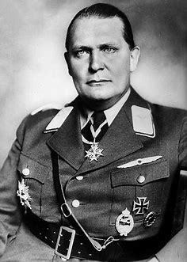

Né le 12 janvier 1893 et mort le 15 octobre 1946.
Ministre de l’Aviation allemand, bras droit d’Hitler et un des plus importants chefs nazis, fondateur de la Gestapo (en 1933) et de l’armée aérienne Allemande.
Pour plus de détails
